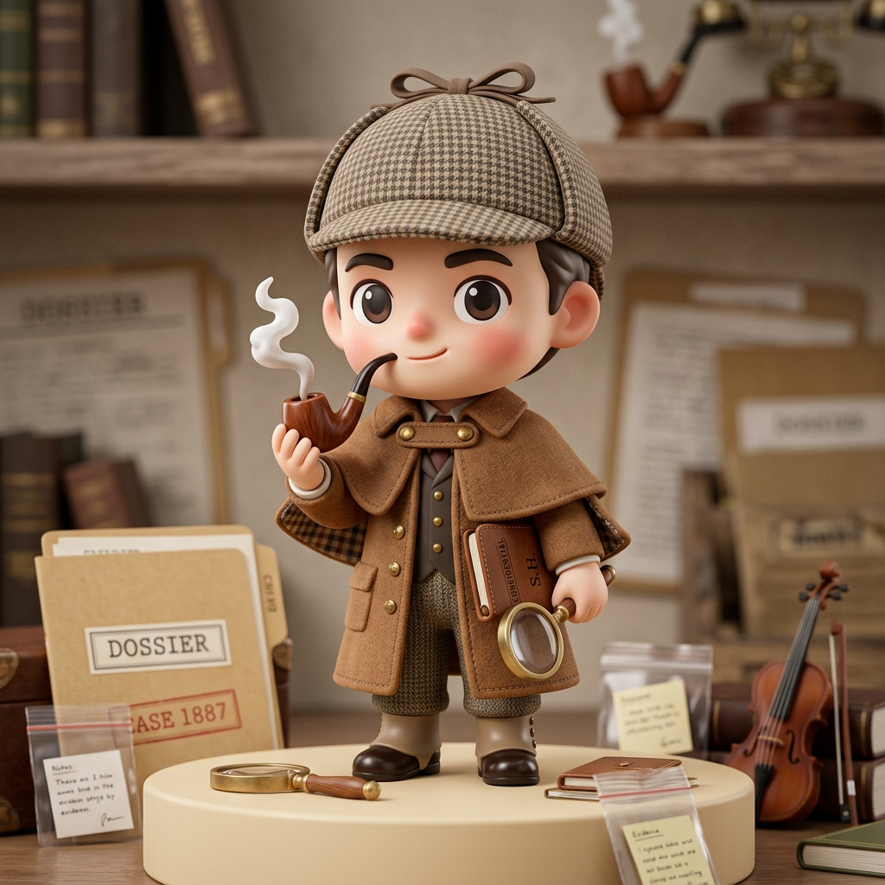

✦ DESIGN BRIEF & IP HIGHLIGHTS
将严谨的企业调查，注入泡泡玛特潮玩 IP 的灵性与辨识度
根据您的指令，我们彻底拒绝千篇一律的 AI 紫渐变和模板化卡片。借助真实生成的 3D 泡泡玛特盲盒公仔，严格体现夏洛克的千鸟格猎鹿帽（deerstalker hat）与石楠木弯烟斗（briar pipe）特征，并以此为锚点构建了 3 个在色彩哲学、排版骨架、交互节奏上截然不同的结果呈现供您挑选：
🎩
千鸟格绑带猎鹿帽
经典英伦侦探符号，Q萌潮玩比例
💨
石楠木弯曲烟斗
吐纳青烟/问号烟圈，从容破案姿态
🔎
求职者自保六问
4399 真实调查数据 E1-E17 全量支持

VERSION 01
VARIANCE: 8 · MOTION: 7
CYBER DETECTIVE TERMINAL
方案一 · 赛博暗夜调查局
调性：极客暗黑风 (Deep Onyx / Slate-950) + 荧光青/琥珀金 HUD 警戒雷达。
IP 呈现：3D 潮玩探长置于全息展示仓，手持发光全息放大镜，带呼吸扫描灯与破译台词气泡。
交互：证据流时间轴、五维光柱、交互式可勾选面试追问终端。
最适场景： 技术极客、程序员求职背调、数据硬核审查。

VERSION 02
VARIANCE: 6 · MOTION: 4
SWISS EDITORIAL DOSSIER
方案二 · 贝克街解密卷宗
调性：顶级瑞士排版 + 绝密纸质档案袋 (Classified Dossier) + 机密印章红。
IP 呈现：以拍立得/档案附签的形式斜贴在卷宗封面，粗花呢风衣斗篷与石楠木弯烟斗质感极其高级。
交互：打字机等宽字体、红印章、精密的证据网格登记簿与督察手记。
最适场景： 中高管求职、严肃尽调背调、法律与合规审计视角。

VERSION 03
VARIANCE: 9 · MOTION: 8
POP TOY LAB & UNBOXING
方案三 · 潮玩盲盒开箱馆
调性：泡泡玛特盲盒新锐潮玩展厅 (Pop Toy Clay & Neon Mint) + 3D 拟物感。
IP 呈现：正版盲盒外包装盒 + 手办吐出问号烟圈、俏皮眨眼，极具潮玩收藏感。
交互：5 张盲盒卡牌支持点击 3D 翻转（正面看表象，背面看反证），趣味性拉满。
最适场景： 应届生/年轻人、小红书及社交媒体传播、生动解压的避坑利器。
TASTE SKILL MATRIX
设计三拨盘（Dials）与特性全景对比
| 维度指标 | 方案一 · 赛博暗夜调查局 | 方案二 · 贝克街解密卷宗 | 方案三 · 潮玩盲盒开箱馆 |
|---|---|---|---|
| Variance (排版差异度) | 8 (左右非对称 HUD 监控台) | 6 (瑞士现代网格 + 纸质档案) | 9 (新锐盲盒展台 + 动态翻转卡) |
| Motion (动效与交互强度) | 7 (呼吸发光、扫描线、勾选终端) | 4 (克制沉稳、拍立得微悬停) | 8 (3D 翻牌物理动效、镭射流光) |
| Density (信息呈现密度) | 5 (折叠终端、流式证据链) | 3 (留白呼吸感、严肃长篇引证) | 4 (模块化大卡片、卡背反转阅读) |
| 夏洛克 IP 道具与形态 | 全息发光放大镜 + 科技小风衣 + 弯烟斗 | 拍立得质感 + 粗花呢千鸟格斗篷 + 石楠木烟斗 | 正版盲盒包装盒 + 吐出问号烟圈 + 俏皮眨眼 |
| 求职者核心获得感 | 极客诊断感，一目了然的证据雷达 | 权威背调档案，法律与判词级的公信力 | 趣味解压、主动翻卡揭露反向真相 |